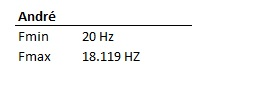

Teste de audiometria: O teste de audiometria tem como finalidade guiar auditivamente a pessoa e testar os tons e a intensidade que é capaz de ouvir.
André: primeiro teste realizado foi utilizando somente as caixas de som acusticas do notebook. Segue abaixo o resultado.
Abaixo segue o teste realizado utilizando um fone de ouvido simples, sem isolador acustico.
É possivel perceber a diferença auditiva utilizando a caixa de som acustica do notebook, este efeito pode ter ocorrido dado a qualidade inferior do fone de ouvido utilizado somado a falta de configurações especificar para este fone de ouvido.
Para a proxima etapa do laboratorio iremos realizar o teste de audição utilizando as frequencias. Sabemos que o ser humano em média é capaz de ouvir de 20Hz à 20000Hz, porém nem todos tem a mesma faixa audível. Existem muitos fatores que podem influencias as diferenças faixas de frenquencias auditiveis de cada pessoa, como por exemplo, exposições constantes a sons elevados que com o tempo possam prejudicas os ouvidos, sensibilidade auditiva e até mesmo o ambiente onde o som é reproduvido. Abaixo segue as faixas auditivas perceptivas encontradas.
